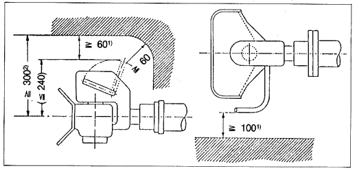

| zu 1) | Die Maße ≥ 60 mm und ≥ 100 mm (Handhebelfreiraum) gelten grundsätzlich für alle Arten von Bolzenkupplungen und Anbausituationen- Für Bolzenkupplungen mit nach abwärts gerichtetem Handhebel gilt das Maß ≥ 60 mm sinngemäß (hier: nach unten). |
| zu 2) | Das Maß ≥ 300 mm ist am Fahrzeug
einzuhalten, wenn die Möglichkeit der freien Austauschbarkeit
bauartgenehmigter (ABG = Allgemeine Bauartgenehmigung)
Normkupplungen (Bolzenkupplungen DIN 74 051 Teil 1 "Mechanische
Verbindungen für Kraftfahrzeuge und Anhänger;
Selbsttätige Bolzenkupplungen 40; Maße und Rechenwerte" bzw. DIN 74 052 Teil 1 „Mechanische
Verbindungen für Kraftfahrzeuge und Anhänger; Selbsttätige Bolzenkupplungen 50; Maße und Rechenwerte“
untereinander ohne erneute Begutachtung durch einen
Sachverständigen gegeben sein soll. Andernfalls kann bei einem
Austausch gegen nicht baugleiche Bolzenkupplungen (unterschiedliche
ABG-Nr) der Freiraum um den Handhebel unzulässig
eingeschränkt sein. Das gilt jedoch nicht für
Bolzenkupplungen mit nach abwärts gerichtetem Handhebel;
solche sind allerdings nur an Heckkippern oder Kraftfahrzeugen mit
Hecktüren oder Hubladebühnen (Ladebordwänden)
zulässig, sofern an diesen Zugfahrzeugen hierzu eine
technische Notwendigkeit besteht (bestätigt durch ein
Gutachten eines amtlich anerkannten Sachverständigen für
den Kraftfahrzeugverkehr). Das Maß ≥ 300 mm ergibt sich aus dem Maß ≤ 240 mm, das in DIN 74 051 Teil 11 und in DIN 74 052 festgelegt ist, und dem Freiraummaß ≥ 60 mm um den Handhebel. Siehe auch "Richtlinie des Europäischen Parlaments und des Rates vom 30. Mai 1994 über mechanische Verbindungseinrichtungen von Kraftfahrzeugen und Kraftzeuganhängern sowie ihre Anbringung an diesen Fahrzeugen" (94/20/EG) |